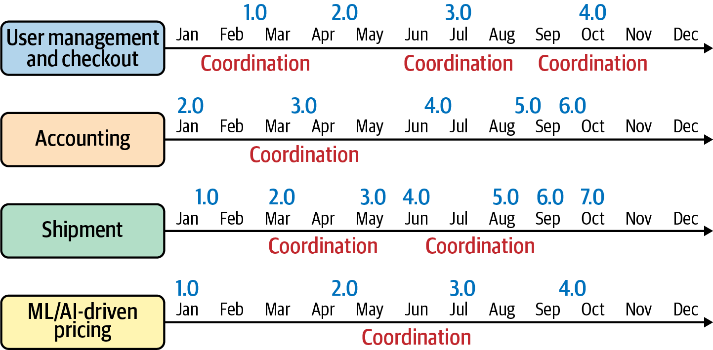

Mục tiêu của cuốn sách này là giúp bạn xây dựng một kiến trúc microservices có thể vận hành. Trong những trang tiếp theo, bạn sẽ thấy những lời khuyên có quan điểm rõ ràng và mang tính chỉ dẫn để xây dựng phần mềm. Những lời khuyên đó đến từ kinh nghiệm thực tế của các chuyên gia mà chúng tôi đã tổng hợp, cả từ những lần triển khai thành công lẫn những trường hợp lẽ ra có thể làm tốt hơn. Chúng tôi đã chắt lọc những bài học này thành một mô hình mà hy vọng sẽ giúp bạn đưa hệ thống của riêng mình vào vận hành nhanh hơn.
Trong những năm gần đây, phong cách xây dựng phần mềm theo microservices đã bùng nổ về mức độ phổ biến. Vào đầu thập niên 2010, thuật ngữ microservices xuất hiện như một cách để mô tả một phong cách kiến trúc phần mềm mới. Các ứng dụng được xây dựng theo phong cách mới được đặt tên này bao gồm những thành phần nhỏ, độc lập nhưng phối hợp với nhau. Kể từ đó, tỷ lệ áp dụng phong cách microservices đã tăng vọt. Các startup, doanh nghiệp lớn và mọi tổ chức ở giữa đều đã học hỏi và triển khai các kiến trúc kiểu microservices. Hệ sinh thái công cụ, dịch vụ và giải pháp ngày càng mở rộng trong lĩnh vực này là minh chứng cho mức độ phổ biến rộng khắp của nó. Tại thời điểm cuốn sách này được viết, Allied Market Research dự đoán rằng thị trường toàn cầu cho kiến trúc microservices sẽ tăng lên 8,07 tỷ USD vào năm 2026, từ mức hiện tại là 2,07 tỷ USD. Những con số như vậy cho thấy mức độ quan tâm rất lớn, mức độ áp dụng rất cao và vô số công việc liên quan đến microservices.
Với nhiều người, xây dựng phần mềm theo cách microservices đã trở thành một thách thức. Sự thật là việc triển khai một hệ thống microservices không hề dễ. Làm cho nhiều phần độc lập cùng hoạt động với nhau khó hơn những gì nghe qua tưởng tượng. Chi phí quản lý, bảo trì, hỗ trợ và kiểm thử cộng dồn lại trong hệ thống. Ở quy mô lớn, các chi phí đó có thể trở nên quá đắt đỏ. Nếu không cẩn thận, nỗi đau trong việc quản lý hệ thống có thể khiến microservices trông như một ý tưởng tồi.
Nhưng những lợi ích của việc xây dựng microservices khiến rủi ro trở nên xứng đáng. Khi được thực hiện tốt, microservices cho phép bạn thay đổi phần mềm nhanh hơn và an toàn hơn ở quy mô lớn. Việc thay đổi nhanh hơn và an toàn hơn đồng nghĩa với sự linh hoạt lớn hơn cho doanh nghiệp của bạn. Sự linh hoạt đó chuyển hóa thành kết quả tốt hơn cho doanh nghiệp và tổ chức của bạn.
Bí quyết để khai mở toàn bộ giá trị đó là có một kiến trúc phù hợp để hỗ trợ các dịch vụ. Kiến trúc ấy cần giảm chi phí hệ thống mà không làm suy giảm giá trị của các dịch vụ độc lập. Để xây dựng được kiến trúc đó, bạn sẽ cần đưa ra những quyết định quan trọng từ sớm. Những quyết định đó sẽ trải rộng qua phương pháp, quy trình, đội nhóm, công nghệ và công cụ. Chúng cũng cần phối hợp với nhau để hình thành một tổng thể tối ưu.
Một cách tốt để xây dựng một hệ thống như vậy là thông qua tiến hóa. Bạn có thể bắt đầu với một vài quyết định nhỏ rồi vừa làm vừa học hỏi và trưởng thành. Trên thực tế, phần lớn những người áp dụng sớm đã đi đến microservices thông qua thử nghiệm lặp. Họ không khởi đầu với mục tiêu xây dựng một ứng dụng dựa trên microservices. Thay vào đó, họ đi đến microservices thông qua một quá trình tối ưu hóa và cải tiến liên tục.
Bắt đầu từ con số không rồi lặp dần cần có thời gian. Nhưng tin tốt là bạn có thể tận dụng kinh nghiệm của những người thực hành này để xây dựng hệ thống của mình nhanh hơn. Hãy bắt đầu bằng một nền tảng gồm các mẫu, phương pháp và công cụ đã từng được sử dụng thành công cùng nhau. Sau đó, tối ưu hệ thống để đáp ứng các mục tiêu và ràng buộc riêng của tổ chức bạn.
Trong cuốn sách này, chúng tôi đã ghi lại những quyết định tạo nên một nền tảng microservices vững chắc. Trước khi đi sâu vào chi tiết của mô hình, hãy cùng trả lời một câu hỏi quan trọng. Chính xác thì chúng ta muốn nói gì khi nhắc đến “microservices”?
Không có một định nghĩa chính thức, mang tính chuẩn tắc duy nhất cho microservices. Một điểm khởi đầu tốt là bài viết nền tảng của James Lewis và Martin Fowler về microservices từ năm 2014. Trong bài viết đó, họ mô tả microservices là:
một cách tiếp cận để phát triển một ứng dụng đơn lẻ thành một tập hợp các dịch vụ nhỏ, mỗi dịch vụ chạy trong tiến trình riêng và giao tiếp bằng các cơ chế nhẹ. […] được xây dựng xoay quanh các năng lực kinh doanh và có thể được triển khai độc lập bằng hệ thống triển khai hoàn toàn tự động.
Trọng tâm thực sự trong bài viết của Lewis và Fowler là tập hợp chín đặc trưng mà microservices sở hữu. Danh sách của họ bắt đầu với đặc trưng cốt lõi của microservice là componentization via services, tức là chia một ứng dụng thành các dịch vụ nhỏ hơn. Từ đó, họ tiếp tục đề cập đến một phạm vi năng lực rất rộng. Họ ghi nhận nhu cầu về thiết kế tổ chức và quản lý thông qua các đặc trưng organization around business capabilities và decentralized governance. Họ gợi mở các thực hành DevOps và phân phối theo Agile khi đưa ra infrastructure automation và products not projects. Họ cũng nêu ra một vài nguyên lý kiến trúc then chốt, chẳng hạn như smart endpoints and dumb pipes, design for failure và evolutionary design.
Mỗi đặc trưng trong số này đều đáng để tìm hiểu, và chúng tôi khuyến khích bạn đọc bài viết của họ nếu chưa đọc. Khi kết hợp lại, các đặc trưng này tạo thành một giải pháp tổng thể với tập hợp mối quan tâm rất lớn. Nó bao gồm công nghệ, hạ tầng, kỹ nghệ phần mềm, vận hành hóa, quản trị, cấu trúc đội nhóm và văn hóa.
Để đối chiếu, đây là một định nghĩa khác về microservices từ cuốn Microservice Architecture của Irakli Nadareishvili, Ronnie Mitra, Matt McLarty và Mike Amundsen (O’Reilly):
Một microservice là một thành phần có thể triển khai độc lập, với phạm vi được giới hạn rõ ràng, hỗ trợ khả năng tương tác thông qua giao tiếp dựa trên thông điệp. Kiến trúc microservice là một phong cách kỹ nghệ hóa các hệ thống phần mềm có mức độ tự động hóa cao, có thể tiến hóa, được cấu thành từ các microservice được căn chỉnh theo năng lực.
Định nghĩa này tương đồng với định nghĩa của Lewis và Fowler, nhưng đặc biệt nhấn mạnh vào phạm vi được giới hạn, khả năng tương tác và giao tiếp dựa trên thông điệp. Nó cũng phân biệt giữa microservice và kiến trúc làm nền cho chúng.
Đây chỉ là hai ví dụ trong vô vàn định nghĩa về microservices. Cũng như trong hai ví dụ này, hầu hết các định nghĩa nhìn chung đều tương tự nhau, nhưng mỗi định nghĩa lại khác đi đôi chút về trọng tâm. Tuy vậy, chúng thường khác nhau đủ nhiều để khiến bạn khó đánh giá liệu mình đã xây dựng được một hệ thống microservices “chuẩn giáo khoa” hay chưa.
Trong thế giới công nghệ, tên gọi rất quan trọng vì chúng cho chúng ta một cách đơn giản để giao tiếp những khái niệm phức tạp. Trong trường hợp này, nhãn “microservices” cho phép chúng ta mô tả một phong cách kiến trúc phần mềm có ba đặc trưng thiết kế tổng quát:
Kiến trúc ứng dụng chủ yếu được cấu thành từ các “dịch vụ” mà máy có thể gọi tới và được cung cấp qua mạng.
Kích thước (hay ranh giới) của dịch vụ là một yếu tố thiết kế quan trọng. Những ranh giới này bao gồm các yếu tố runtime, design-time và con người.
Hệ thống phần mềm, tổ chức và cách thức làm việc được tối ưu hóa một cách tổng thể để đạt được một mục tiêu.
Đây là một tập đặc trưng thiết kế khá tổng quát. Ví dụ, nó không ghi rõ nên dùng kiểu tổ chức nào, công cụ cụ thể nào hay nguyên lý kiến trúc nào. Cũng không có các mẫu hoặc thực hành chính thức nào được định nghĩa. Thay vào đó, nó chỉ cung cấp cho chúng ta vừa đủ đặc điểm để có thể nhận ra một hệ thống microservices khi nhìn thấy.
Sự thật là, nếu cố gắng đủ nhiều, bạn có thể gọi gần như bất kỳ hệ thống dựa trên API nào là kiến trúc microservices. Nhưng trọng tâm thực sự nên nằm ở mục tiêu của hệ thống bạn. Chúng tôi cho rằng câu hỏi vì sao bạn lại muốn xây dựng microservices sẽ khai sáng hơn nhiều so với câu hỏi chúng là gì. Dù microservices có rất nhiều lợi ích tiềm năng, chúng tôi tin rằng lý do tốt nhất để xây dựng phần mềm theo cách này là giảm chi phí phối hợp của bạn.
Các công ty trên khắp thế giới đã thành công khi triển khai kiến trúc microservices. Gần như ở mọi nơi, những người thực hành mà chúng tôi trò chuyện cùng đều cho biết tốc độ phân phối phần mềm đã tăng lên. Chúng tôi tin rằng sự cải thiện đó đến từ lợi ích nền tảng của phong cách microservices: giảm chi phí phối hợp.
Cần lưu ý rằng có nhiều cách để tăng tốc trong kỹ nghệ phần mềm. Xây dựng phần mềm theo cách microservices chỉ là một lựa chọn. Ví dụ, bạn có thể xây dựng một hệ thống thật nhanh bằng cách đi đường tắt và gánh thêm “nợ kỹ thuật” để xử lý sau. Hoặc bạn có thể bớt chú trọng đến tính ổn định và an toàn rồi chỉ đơn giản là đưa sản phẩm ra thị trường. Trong một số tình huống và với một số doanh nghiệp, đó là những cách tiếp cận hợp lý.
Nhưng những hệ thống được phát triển cho các lĩnh vực tài chính, y tế và chính phủ, cùng nhiều lĩnh vực khác, không được phép đánh đổi an toàn để lấy tốc độ. Tuy vậy, áp lực cạnh tranh và thị trường vẫn đòi hỏi các ngành này phải tăng tốc như bất kỳ ngành nào khác. Đây chính là nơi một hệ thống microservices có thể tỏa sáng. Nó cung cấp một cách tiếp cận kiến trúc cho phép bạn tăng tốc mà không làm tổn hại đến an toàn. Và nó cho phép bạn làm điều đó ở quy mô lớn.
Xây dựng phần mềm phức tạp là công việc khó khăn. Trong phim ảnh và trên TV, một lập trình viên thiên tài có thể anh hùng tạo ra một sản phẩm làm thay đổi thế giới chỉ trong một cuối tuần mất ngủ. Ngoài đời, cần rất nhiều người và rất nhiều thời gian mới tạo ra được một kết quả chất lượng. Nhiều nhóm cùng làm trên một dự án phức tạp thường triển khai các phần khác nhau của hệ thống đó, theo các lộ trình độc lập và với nhịp độ riêng. Theo định kỳ, các phần này cần được tích hợp để giải quyết các phụ thuộc, và tại thời điểm đó những nhóm phần lớn là tự chủ này cần phối hợp công việc với nhau (xem Hình 1-1).
Hãy tưởng tượng Jane là trưởng nhóm phụ trách luồng công việc Kế toán. Nhóm của cô ấy vừa hoàn thành một sprint và đang phụ thuộc vào một thành phần do nhóm phụ trách mô-đun Vận chuyển, do Tyrone dẫn dắt, phát triển. Vì các lộ trình là độc lập, rất có thể nhóm của Tyrone thực ra vẫn chưa hoàn tất việc triển khai thành phần cần thiết đó trong luồng công việc Vận chuyển. Lúc này Jane có một trong hai lựa chọn: hoặc cô ấy chờ thành phần được bàn giao (ưu tiên an toàn nhưng hy sinh tốc độ vì nhóm của cô phải dừng lại) và thực hiện kiểm thử tích hợp đúng chuẩn, hoặc cô ấy dựa vào hợp đồng giao diện đã thống nhất giữa nhóm của mình và nhóm của Tyrone, với giả định rằng nhóm kia sẽ bàn giao thành phần đúng như kế hoạch. Trong trường hợp thứ hai, Jane sẽ tiếp tục mà không bị gián đoạn, làm tăng tốc độ của nhóm mình, nhưng có khả năng ảnh hưởng đến mức độ an toàn chung của hệ thống vì kiểm thử tích hợp đã không diễn ra ở thời điểm sớm nhất có thể và một giả định theo “happy path” đã được đưa ra.

Bất kỳ trưởng nhóm nào trong một môi trường phức tạp, nhiều nhóm đều thường xuyên phải đối mặt với lựa chọn này: bỏ qua chi phí phối hợp để giữ đà tiến lên, hay thừa nhận nhu cầu phải phối hợp và chậm lại. Thông thường, chúng ta chọn một trong hai dựa trên trực giác về rủi ro so với lợi ích, nhưng xét trên toàn cục, trong một hệ thống đủ phức tạp, khi những lựa chọn như vậy xuất hiện đủ thường xuyên, sẽ có một sức căng rất rõ rệt giữa tốc độ và an toàn.
Sức căng đó là có thật; tuy nhiên, nó không liên quan đến bản năng nguyên thủy của chúng ta và có một cách để giải quyết. Vì chi phí phối hợp gây ra sức căng này, vậy nếu chúng ta có một hệ thống được thiết kế có chủ đích để giảm thiểu những chi phí phối hợp đó thì sao? Nếu thay vì phải chọn bên này hay bên kia, các nhóm hầu như không còn phải đối diện với lựa chọn đó nữa thì sao? Bạn có thể có một thiết kế như vậy, nhấn mạnh vào việc giảm thiểu phối hợp, nếu bạn có các nhóm tự chủ làm việc trên những lô công việc nhỏ và tách biệt. Và đó chính là bản chất của kiến trúc microservices.
Việc hiểu rằng lực nền tảng để xây dựng các kiến trúc microservices thành công là hướng tới việc giảm thiểu phối hợp là vô cùng hữu ích. Nó cho chúng ta một phép thử phổ quát. Xây dựng các hệ thống phân tán phức tạp như kiến trúc microservices không hề dễ, và khi phân vân, chúng ta luôn nên tự hỏi: “Quyết định mà tôi đang đối mặt có làm giảm chi phí phối hợp cho các nhóm của mình hay không?” Câu trả lời đúng sẽ trở nên rõ ràng hơn rất nhiều khi ta nhìn các quyết định dưới góc độ chi phí phối hợp.
Rốt cuộc, microservices trở nên phổ biến vì chúng giúp doanh nghiệp thành công. Các tổ chức hiện đại đang chịu áp lực vô cùng lớn để thích nghi, thay đổi và cải tiến thường xuyên hơn, nhanh hơn. Việc đầu tư vào một kiến trúc công nghệ được thiết kế có chủ đích nhằm cải thiện tốc độ thay đổi và độ an toàn khi thay đổi ở quy mô tổ chức lớn là điều rất hợp lý. Phong cách microservices cho phép các công ty hoạt động trong những lĩnh vực phức tạp có được sự linh hoạt của một công ty nhỏ và đơn giản hơn, đồng thời vẫn tận dụng được sức mạnh và tầm với từ quy mô thực tế của mình. Điều đó cực kỳ hấp dẫn, và tốc độ tăng trưởng trong mức độ áp dụng đã chứng minh điều ấy. Tuy nhiên, lợi ích không đến miễn phí. Cần rất nhiều công sức, sự tập trung và quyết định ngay từ đầu để xây dựng một kiến trúc microservices có thể mở khóa giá trị đó.
Một trong những rào cản lớn nhất mà người mới áp dụng microservices phải đối mặt là xử lý phạm vi và bề rộng khổng lồ của một hệ thống microservices. Bạn có thể bắt đầu bằng cách tập trung vào việc tạo ra các dịch vụ nhỏ hơn, có ranh giới rõ ràng. Nhưng rất nhanh sau đó, bạn sẽ thấy mình phải tìm ra hạ tầng, mô hình dữ liệu, framework, mô hình đội nhóm và quy trình phù hợp để hỗ trợ chúng. Có quá nhiều thứ phải bao quát, và việc xử lý toàn bộ phạm vi đó có thể dẫn đến những thách thức rất riêng. Dưới đây là ba bài toán thiết kế lớn mà các kiến trúc sư và kỹ sư microservices thường gặp phải:
Một thách thức lớn là các quyết định có tác động lớn trong một hệ thống microservices không dễ để đo lường. Từ những quyết định bạn đưa ra hôm nay, vấn đề có thể phát sinh nhưng lại không xuất hiện cho đến tận sau này. Ví dụ, lúc bắt đầu bạn có thể quyết định dùng một thư viện giao tiếp dùng chung để giúp các dịch vụ nói chuyện với nhau dễ hơn. Theo thời gian, bạn có thể nhận ra rằng việc giữ cho thư viện đó luôn được cập nhật trên toàn bộ microservices và các nhóm lại trở thành một vấn đề khổng lồ. Cốt lõi của vấn đề ở đây là rất khó hiểu được tác động của quyết định bạn đang đưa ra cho đến khi sự cố xuất hiện, và điều đó khiến việc đánh giá các lựa chọn và đưa ra quyết định trở nên khó khăn.
Về bản chất, một hệ thống microservices là một hệ thống thích nghi phức hợp. Điều đó có nghĩa là mỗi phần của hệ thống đều tác động đến các phần khác theo một cách nào đó. Khi tất cả các phần ấy kết hợp lại, một hành vi hệ thống mang tính mới nổi sẽ được tạo ra. Nếu bạn từng đưa một công cụ mới hay một quy trình mới vào trong tổ chức, có lẽ bạn đã thấy điều này tận mắt. Một số nhóm tiếp nhận tác nhân mới và thay đổi ngay lập tức, số khác cần được giúp đỡ và hỗ trợ để thích nghi, nhưng dù thế nào đi nữa, bạn gần như luôn phải đối mặt với những hệ quả đối với cách mọi người làm việc và các quyết định được đưa ra. Ví dụ, các nhóm công nghệ khi đưa công cụ container hóa Docker vào gần như chắc chắn sẽ phải điều chỉnh vòng đời phát triển và phát hành của mình như một hệ quả của việc áp dụng mô hình triển khai container. Đôi khi những hệ quả này đã được dự tính trước, nhưng thường thì chúng ta phải xử lý những hậu quả ngoài ý muốn của các thay đổi đã được đưa vào. Chính độ phức tạp này khiến việc thiết kế hệ thống microservices trở nên khó khăn. Rất khó dự đoán chính xác tác động của các thay đổi được đưa ra, dẫn đến rủi ro là mô hình kiến trúc mới có thể gây hại nhiều hơn lợi.
Khi chúng ta cộng dồn bài toán vòng phản hồi dài của các quyết định với hệ thống phức tạp mà mình cần thiết kế, rất dễ thấy vì sao kiến trúc microservices lại là một thách thức. Những quyết định bạn cần đưa ra vừa có tác động rất lớn lại vừa khó đo lường. Điều này có thể dẫn đến vô tận suy đoán, thảo luận và đánh giá các quyết định kiến trúc vì nỗi sợ xây sai loại hệ thống. Thay vì xây dựng một hệ thống có thể tạo ra kết quả kinh doanh, chúng ta rơi vào trạng thái do dự, cố gắng mô hình hóa vô số hoán vị có thể có trong các lựa chọn của mình. Trạng thái này thường được gọi là analysis paralysis. Mọi thứ càng khó hơn khi trên web đầy rẫy những câu chuyện kinh hoàng, những lời khuyên kiểu “bumper sticker” và những thực tiễn tốt nhất mâu thuẫn nhau về cách xây dựng kiến trúc microservices.
Rốt cuộc, thách thức thực sự của việc xây dựng kiến trúc microservices nằm ở chỗ phải xử lý một hệ thống lớn, phức tạp, trải rộng trên phạm vi rất lớn. Tin tốt là đây không phải là một vấn đề hoàn toàn mới. Trong cuốn sách này, chúng tôi sẽ tập hợp và sử dụng một bộ thực hành và mẫu đã tiến hóa cho chính loại miền bài toán này. Chúng tôi cũng sẽ giới thiệu và triển khai các công cụ hiện thân cho những cách làm việc này và giúp công việc trong một hệ thống microservices trở nên dễ hơn, an toàn hơn, rẻ hơn và nhanh hơn.
Đến đây, chúng ta đã xác lập rằng phong cách microservices có thể giúp bạn phân phối phần mềm nhanh hơn mà không đánh đổi an toàn. Nhưng chúng ta cũng đã nhận diện rằng con đường đi đến một kiến trúc microservices tốt là khó khăn và đầy những quyết định phức tạp, đầy thử thách. Nhiều người triển khai microservices thành công mà chúng tôi từng trao đổi đã xây dựng hệ thống của họ thông qua cải tiến và lặp lại liên tục. Nhiều người trong số họ thậm chí đã phải xây dựng những kiến trúc thất bại trước khi thật sự hiểu được cách xây dựng một hệ thống hiệu quả.
Nếu bạn có thời gian vô hạn, bạn có thể xây dựng một kiến trúc microservices tuyệt vời hoàn toàn bằng thử nghiệm. Bạn có thể áp dụng vô số mô hình tổ chức, thử mọi phương pháp luận và xây dựng các microservice với nhiều kích thước khác nhau. Chỉ cần bạn có thể đo lường kết quả, bạn sẽ tiếp tục cải thiện hệ thống. Với đủ số lần thử, cuối cùng bạn sẽ có được một hệ thống phù hợp với mình cùng rất nhiều kinh nghiệm xây dựng hệ thống microservice.
Tuy nhiên, rất có thể bạn không có đặc quyền sở hữu thời gian vô hạn. Vậy làm sao để xây dựng được chuyên môn cần thiết nhằm tạo ra những hệ thống microservices tốt hơn?
Để giúp giải quyết thách thức này, chúng tôi đã phát triển một mô hình microservices mang tính chỉ dẫn rõ ràng. Chúng tôi đã đưa ra quyết định về thiết kế đội nhóm, quy trình, kiến trúc, hạ tầng, thậm chí cả công cụ và công nghệ. Chúng tôi sẽ đi qua một phạm vi chủ đề rộng lớn trong khi vẫn xây dựng một giải pháp kết nối các lĩnh vực đó lại với nhau. Những quyết định của chúng tôi được xây trên các quan điểm hình thành từ kinh nghiệm xây dựng hệ thống microservices cho các tổ chức lớn. Nếu bạn làm theo hướng dẫn của chúng tôi, đến cuối cuốn sách bạn sẽ xây dựng được một hệ thống microservices đơn giản, có thể vận hành, trên một kiến trúc đám mây.
Để làm cho các ví dụ microservices trở nên sống động hơn, chúng tôi sẽ sử dụng bối cảnh của một hệ thống đặt chỗ hàng không hư cấu. Đây sẽ là một phiên bản được đơn giản hóa rất nhiều so với một hệ thống đặt chỗ thực tế. Hệ thống đặt chỗ hàng không cực kỳ cơ bản của chúng ta sẽ có hai chức năng: một dịch vụ thông tin chuyến bay chỉ đọc và một dịch vụ đặt chỗ ghế.
Mục tiêu của chúng tôi là hướng dẫn bạn xây dựng lần triển khai microservices đầu tiên nhanh nhất có thể. Theo kinh nghiệm của chúng tôi, việc trực tiếp xây dựng một hệ thống thực là cách tốt nhất để hiểu sâu công việc liên quan và các quyết định then chốt. Chúng tôi không kỳ vọng bạn đồng ý với mọi quyết định của mình. Trên thực tế, việc chất vấn những quyết định mà chúng tôi đã đưa ra thay bạn là một phần rất lớn của hành trình học tập! Chúng tôi hy vọng mô hình mà chúng ta cùng xây dựng chỉ là hệ thống microservices đầu tiên trong rất nhiều hệ thống mà bạn sẽ xây dựng.
Bắt đầu một hành trình học tập bằng cách làm theo hướng dẫn là con đường đã được kiểm chứng để đạt đến chuyên môn. Trong Five-Stage Model of Adult Skill Acquisition của Stuart và Hubert Dreyfus, giai đoạn đầu tiên là làm theo hướng dẫn có tính chỉ định trước khi đạt được năng lực thành thạo và chuyên môn.
Phạm vi của một kiến trúc microservices là rất rộng. Đáng tiếc là chúng tôi không thể bao quát toàn bộ phạm vi đó chỉ trong một cuốn sách này. Tuy nhiên, chúng tôi đã nỗ lực tập trung vào những mảng chủ đề phù hợp nhất với một hệ thống microservices và có tác động lớn nhất đến thành công. Hãy cùng điểm nhanh xem chúng ta sẽ đề cập đến những gì trong mô hình microservices “up and running” của mình.
Chúng tôi sẽ khởi đầu quá trình xây dựng của mình trong Chương 2 bằng cách xử lý khía cạnh con người của một hệ thống microservices. Chúng tôi sẽ khám phá những thách thức của việc thiết kế đội nhóm hiệu quả và các yếu tố nền tảng ảnh hưởng đến sự phối hợp giữa các microservice. Chúng tôi cũng sẽ giới thiệu các đội nhóm sẽ được dùng trong hệ thống ví dụ cùng với một công cụ tên là Team Topologies để hỗ trợ thiết kế chúng.
Sau khi thiết kế đội nhóm, chúng tôi sẽ giới thiệu quy trình SEED(S) trong Chương 3. Đây là một quy trình thiết kế giúp chúng ta tạo ra các microservice đáp ứng nhu cầu của người dùng và bên tiêu thụ bằng các giao diện và hành vi có thể hành động được. Sau đó, trong Chương 4, chúng tôi sẽ xử lý bài toán thiết kế ranh giới phù hợp cho các microservice ví dụ. Chúng tôi cũng sẽ giới thiệu một số khái niệm quan trọng của Domain-Driven Design và sử dụng một quy trình gọi là Event Storming để “rightsize” các dịch vụ của mình.
Dữ liệu là một trong những khía cạnh khó khăn nhất của thiết kế microservices. Trong Chương 5, chúng tôi sẽ xem xét các yếu tố dữ liệu mà bạn cần cân nhắc trong một hệ thống microservices. Chúng tôi sẽ giới thiệu khái niệm độc lập dữ liệu và đặt nền móng cho kiến trúc dữ liệu trong dự án ví dụ.
Phần triển khai microservices của chúng tôi sẽ được xây dựng trên một hạ tầng đám mây. Trong Chương 6, chúng tôi sẽ giới thiệu và triển khai các nguyên lý hạ tầng bất biến và hạ tầng dưới dạng mã (IaC) làm nền tảng cho hạ tầng microservices. Chúng tôi cũng sẽ giới thiệu AWS là nền tảng đám mây của mình và xây dựng một pipeline CI/CD dựa trên GitHub Actions. Sau đó, trong Chương 7, chúng tôi sẽ dùng pipeline đó để thiết kế và phát triển một hạ tầng microservices trên AWS bao gồm mạng, một cụm Kubernetes và một công cụ triển khai GitOps.
Khi nền tảng hạ tầng đã sẵn sàng, chúng tôi sẽ đi sâu vào công việc kỹ nghệ hóa các microservice . Chúng tôi sẽ bắt đầu bằng việc trình bày các nguyên lý và công cụ bạn cần để thành công trong Chương 8. Sau đó trong Chương 9, chúng tôi sẽ triển khai hai microservice độc lập, dị thể cho ứng dụng ví dụ của mình.
Chúng tôi sẽ kết nối toàn bộ giải pháp lại trong Chương 10, nơi chúng tôi sẽ triển khai một trong các microservice ví dụ đã được kỹ nghệ hóa lên nền tảng đám mây mà mình đã phát triển. Để làm điều đó, chúng tôi sẽ sử dụng một tập công nghệ bao gồm DockerHub, Kubernetes, Helm và Argo CD. Cuối cùng, sau khi phát hành, chúng tôi sẽ nhìn lại hệ thống trong Chương 11.
Mô hình mà chúng tôi phát triển được xây trên một tập năm nguyên lý dẫn đường, trong đó có mẫu twelve-factor app. Nếu quan tâm, bạn có thể đọc về các nguyên lý dẫn đường của mô hình này tại kho GitHub của cuốn sách.
Hy vọng phần tổng quan ngắn này giúp bạn hình dung được phạm vi của mô hình và ứng dụng ví dụ của chúng tôi. Đến cuối cuốn sách, chúng ta sẽ triển khai được một hệ thống đầy đủ. Để đi đến đó, chúng ta sẽ cần đưa ra rất nhiều quyết định. Vì vậy, công cụ đầu tiên chúng ta cần là một cách để theo dõi những quyết định thực sự quan trọng.
Khi nói đến việc xây dựng phần mềm, các quyết định là chuyện vô cùng quan trọng. Các kỹ sư phần mềm và kiến trúc sư chuyên nghiệp được trả công rất cao cho những quyết định họ đưa ra và những vấn đề họ giải quyết. Chất lượng của phần mềm và kết quả kinh doanh mà nó tạo ra phụ thuộc vào chất lượng của những quyết định đó.
Nhưng các quyết định không phải lúc nào cũng dễ đưa ra. Chúng cũng không phải lúc nào cũng đúng. Chúng ta đưa ra quyết định tốt nhất có thể dựa trên thông tin, kinh nghiệm và năng lực mà mình có. Khi bất kỳ biến số nào trong số đó thay đổi, quyết định của chúng ta cũng nên thay đổi. Có những quyết định đúng ở thời điểm đó nhưng trở nên lỗi thời khi công nghệ, con người hoặc hoàn cảnh thay đổi. Cũng có những quyết định ngay từ đầu đã không phải là quyết định tốt. Trong cả hai trường hợp, chúng ta cần một cách để lưu giữ những quyết định quan trọng để có thể đánh giá lại và cải thiện chúng theo thời gian.
Để đáp ứng nhu cầu đó, chúng ta sẽ dùng một công cụ gọi là architecture decision record (hay ADR). Chúng tôi không chắc ai là người phát minh ra thuật ngữ ADR hay nó được dùng lần đầu từ khi nào, nhưng ý tưởng ghi lại các quyết định thiết kế đã tồn tại từ rất lâu. Vấn đề thực sự là phần lớn mọi người không dành thời gian để làm điều đó. Theo kinh nghiệm của chúng tôi, ADR là một công cụ cực kỳ hữu ích và là cách tốt để tạo ra sự rõ ràng cho những quyết định cần được đưa ra.
Một bản ghi quyết định tốt cần nắm bắt bốn thành phần quan trọng:
Thách thức là gì? Vấn đề chúng ta đang cố giải quyết là gì? Các ràng buộc là gì? Một bản ghi quyết định nên cung cấp cho chúng ta phần tóm tắt của những yếu tố bối cảnh này. Nhờ đó, chúng ta có thể hiểu được cơ sở lý luận cho một quyết định và lý do tại sao nó có thể cần được cập nhật.
Một quyết định không thực sự là quyết định nếu không có một lựa chọn cần được đưa ra. Một bản ghi quyết định tốt nên giúp chúng ta hiểu được các lựa chọn là gì. Điều này giúp chúng ta hiểu rõ hơn bối cảnh và “không gian lựa chọn” tại thời điểm quyết định được đưa ra.
Trọng tâm của một quyết định chính là lựa chọn. Mọi bản ghi quyết định đều cần ghi lại lựa chọn đã được đưa ra.
Quyết định luôn có hệ quả và một bản ghi quyết định nên ghi lại những hệ quả quan trọng đó. Các đánh đổi là gì? Lựa chọn quyết định của chúng ta sẽ ảnh hưởng như thế nào đến cách làm việc hoặc những quyết định khác còn cần được đưa ra?
Bạn có thể tạo bản ghi quyết định theo bất kỳ cách nào mình muốn. Bạn có thể viết chúng thành các tệp văn bản, dùng một công cụ quản lý dự án, hoặc thậm chí theo dõi chúng trong một bảng tính. Định dạng và công cụ ít quan trọng hơn nội dung. Chỉ cần bạn nắm bắt được những phần mà chúng tôi đã mô tả thì bạn sẽ có một bản ghi quyết định tốt.
Trong dự án ví dụ của mình, chúng tôi sẽ dùng một định dạng có sẵn gọi là lightweight architectural decision record (LADR). Định dạng LADR do Michael Nygard tạo ra, và là một cách ngắn gọn, súc tích để ghi lại bản ghi quyết định. Hãy cùng làm quen với LADR bằng cách tạo một bản ngay bây giờ.
Nếu bạn muốn dùng thứ gì đó khác ngoài LADR, Joel Parker Henderson có duy trì một danh sách rất hay về các định dạng và mẫu ADR.
Quyết định then chốt đầu tiên mà chúng ta sẽ ghi lại là quyết định lưu lại các quyết định. Nói đơn giản hơn, chúng ta sẽ tạo một ADR nói rằng mình có ý định theo dõi các quyết định của mình. Như đã đề cập, chúng ta sẽ dùng định dạng LADR. Điểm hay của LADR là nó được thiết kế để nhẹ. Nó cho phép chúng ta theo dõi các quyết định trong những tệp văn bản đơn giản mà có thể viết rất nhanh. Vì đang làm việc với các tệp văn bản, chúng ta thậm chí còn có thể quản lý các bản ghi quyết định giống như cách quản lý mã nguồn.
LADR được viết bằng một định dạng văn bản gọi là Markdown, thứ mang lại một cách thanh nhã và đơn giản để viết tài liệu. Điều tuyệt vời ở Markdown là con người có thể dễ dàng đọc nó ở dạng thô và hầu hết các công cụ phổ biến đều biết cách hiển thị nó. Ví dụ, Confluence, GitLab, GitHub và SharePoint đều có thể xử lý Markdown và trình bày nó thành một tài liệu đã được định dạng, dễ đọc đối với con người.
Để tạo LADR đầu tiên dựa trên Markdown, hãy mở trình soạn thảo văn bản yêu thích của bạn và bắt đầu làm việc trên một tài liệu mới. Điều đầu tiên chúng ta sẽ làm là dựng khung cấu trúc.
Hãy thêm đoạn văn bản sau vào tệp LADR của bạn:
#OPM1: Dùng ADR để theo dõi quyết định##Trạng thái Đã chấp nhận##Bối cảnh##Quyết định##Hệ quả
Đây là các thành phần then chốt của bản ghi quyết định của chúng ta. Các ký tự # đứng trước mỗi dòng là token Markdown, cho bộ phân tích biết rằng những dòng này là tiêu đề. Hãy lưu ý rằng chúng ta đã đặt cho quyết định này một tiêu đề tương ứng với quyết định đang được đưa ra. Chúng ta cũng đặt cho quyết định một tiêu đề hơi khó hiểu một chút: “OPM1.” Đây chỉ là một mã viết tắt giúp chúng ta gắn nhãn và hiểu quyết định này liên quan đến phần nào của hệ thống. Trong trường hợp này, “OPM1” cho biết đây là quyết định đầu tiên mà chúng ta ghi lại liên quan đến mô hình vận hành.
Phần tiêu đề Trạng thái trong bản ghi cho chúng ta biết quyết định này đang ở giai đoạn nào trong vòng đời. Ví dụ, nếu bạn đang phác thảo một quyết định mới và cần có sự đồng thuận, bạn có thể bắt đầu với trạng thái Đề xuất. Hoặc nếu bạn đang cân nhắc thay đổi một quyết định hiện có, bạn có thể chuyển trạng thái của nó thành Đang xem xét. Trong trường hợp của chúng ta, quyết định này đã được đưa ra sẵn, nên chúng ta đặt trạng thái là Đã chấp nhận.
Phần Bối cảnh mô tả vấn đề, ràng buộc và nền tảng dẫn đến quyết định đang được đưa ra. Trong trường hợp của chúng ta, chúng ta muốn nắm bắt nhu cầu phải ghi lại các quyết định quan trọng và lý do điều đó lại quan trọng. Hãy thêm đoạn văn bản sau (hoặc biến thể của riêng bạn) vào phần Bối cảnh của bản ghi:
## Bối cảnh
Một kiến trúc microservices rất phức tạp và chúng ta sẽ cần đưa ra
nhiều quyết định. Chúng ta sẽ cần một cách để theo dõi những quyết định
quan trọng mà mình đưa ra, để có thể xem xét lại và đánh giá lại chúng
trong tương lai. Chúng ta muốn dùng một giải pháp nhẹ, dựa trên văn bản
để không phải cài thêm bất kỳ công cụ phần mềm mới nào.Khi đã có bối cảnh, chúng ta có thể chuyển sang ghi lại quyết định thực tế mà mình đã đưa ra. Chúng ta cũng có thể liệt kê một số phương án thay thế đã được cân nhắc cùng với lựa chọn dùng LADR. Hãy thêm nội dung sau vào phần Quyết định để ghi lại điều này:
##Quyết định Chúng ta đã quyết định sử dụng định dạng lightweight architectural decision record (LADR) của Michael Nygard. LADR dựa trên văn bản và đủ nhẹ để đáp ứng nhu cầu của chúng ta. Chúng ta sẽ lưu mỗi bản ghi LADR trong một tệp văn bản riêng và quản lý các tệp đó như mã nguồn. Chúng ta cũng đã cân nhắc các phương án thay thế sau:* Công cụ quản lý dự án (không chọn, vì chúng ta không muốncài thêm công cụ)*Lưu vết không chính thức hoặc "truyền miệng" (không đáng tin cậy)
Phần còn lại chỉ là ghi lại các hệ quả. Trong trường hợp của chúng ta, một trong những hệ quả chính là chúng ta sẽ cần dành thời gian thực sự để ghi lại các quyết định và quản lý các bản ghi đó. Hãy nắm bắt điều này như sau:
##Hệ quả*Chúng ta sẽ cần viết bản ghi quyết định cho các quyết định then chốt*Chúng ta sẽ cần một giải pháp quản lý mã nguồn để quản lý các tệp bản ghi quyết định
Đó là tất cả những gì cần có để viết một LADR. Đây là một cách cực kỳ hữu ích để ghi lại suy nghĩ của bạn và còn có thêm lợi ích là buộc bạn phải đưa ra những quyết định hợp lý, thấu đáo ngay từ đầu. Khi xây dựng ứng dụng chuyến bay ví dụ, chúng ta sẽ giữ một nhật ký các quyết định quan trọng mà mình đưa ra. Để tiết kiệm thời gian, chúng ta sẽ không viết đầy đủ toàn bộ bản ghi quyết định. Thay vào đó, chúng ta sẽ nhấn mạnh rằng một quyết định quan trọng đã được đưa ra như trong ghi chú sau.
Bạn sẽ có thể tìm thấy phiên bản chi tiết của mỗi bản ghi quyết định tại kho GitHub của cuốn sách này.
Trong chương này, chúng tôi đã giới thiệu một số khái niệm nền tảng cho cuốn sách. Chúng tôi đưa ra một định nghĩa tương đối mở về hệ thống microservices, bao gồm ba đặc trưng cốt lõi. Chúng tôi xác định việc giảm chi phí phối hợp là lợi ích then chốt của microservices. Chúng tôi cũng khám phá cách độ phức tạp và trạng thái tê liệt vì phân tích tạo ra thách thức cho những người áp dụng microservices.
Để giúp giải quyết những thách thức này, chúng tôi đã giới thiệu mô hình microservices “up and running”, một cách triển khai mang tính quan điểm và chỉ dẫn rõ ràng nhằm tăng tốc quá trình học tập cho người triển khai. Chúng tôi đã bao quát các khía cạnh của mô hình và những chủ đề sẽ được thảo luận. Cuối cùng, chúng tôi giới thiệu khái niệm architectural decision record (ADR) mà chúng tôi dự định sử dụng xuyên suốt phần còn lại của cuốn sách.
Khi phần tổng quan đã xong, việc còn lại chỉ là xây dựng hệ thống. Chúng ta sẽ khởi động trong Chương 2 bằng cách đi vào cách công việc microservices được thực hiện, với sự tập trung đặc biệt vào phối hợp giữa các đội nhóm.